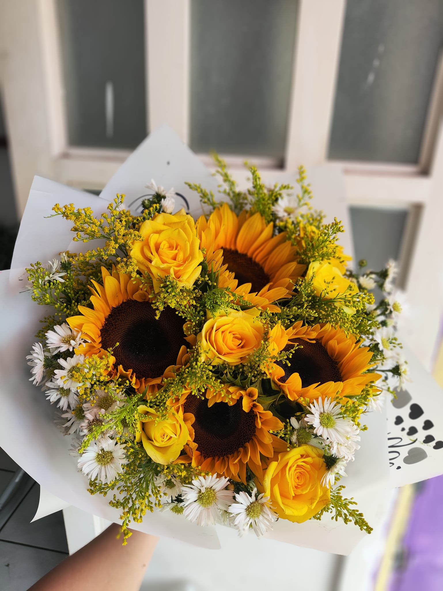
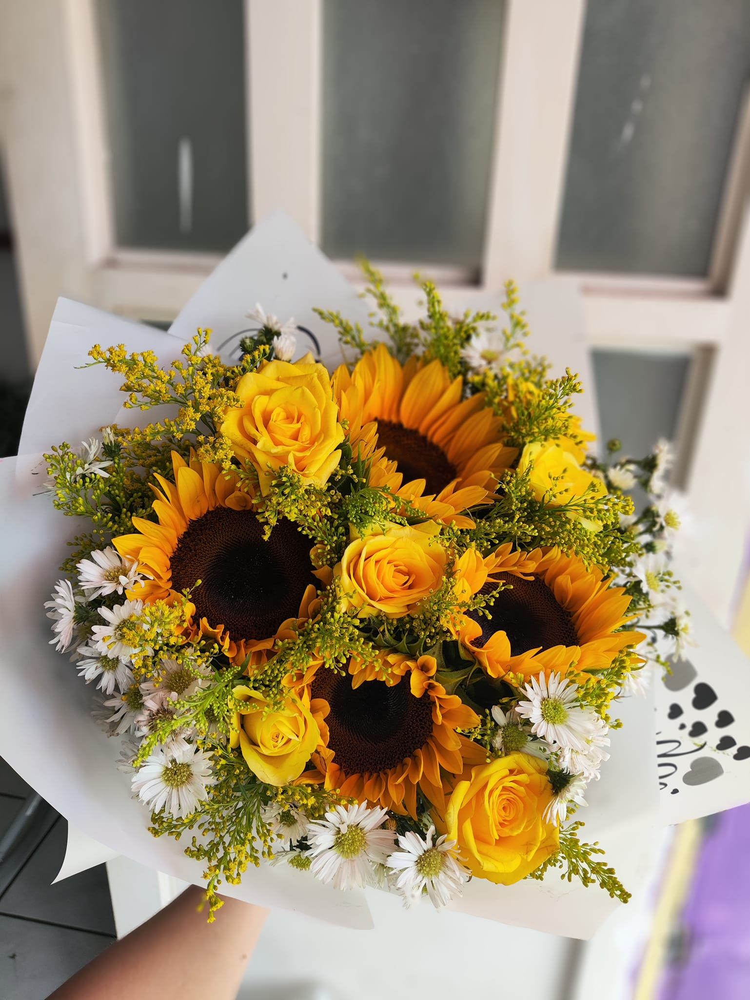
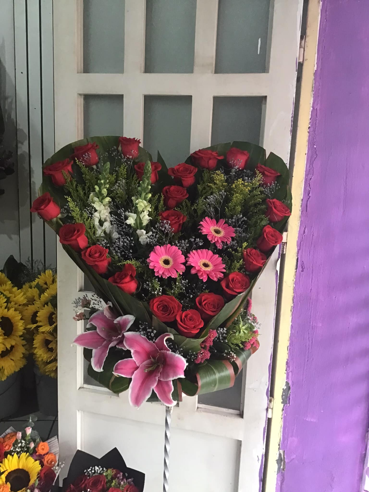
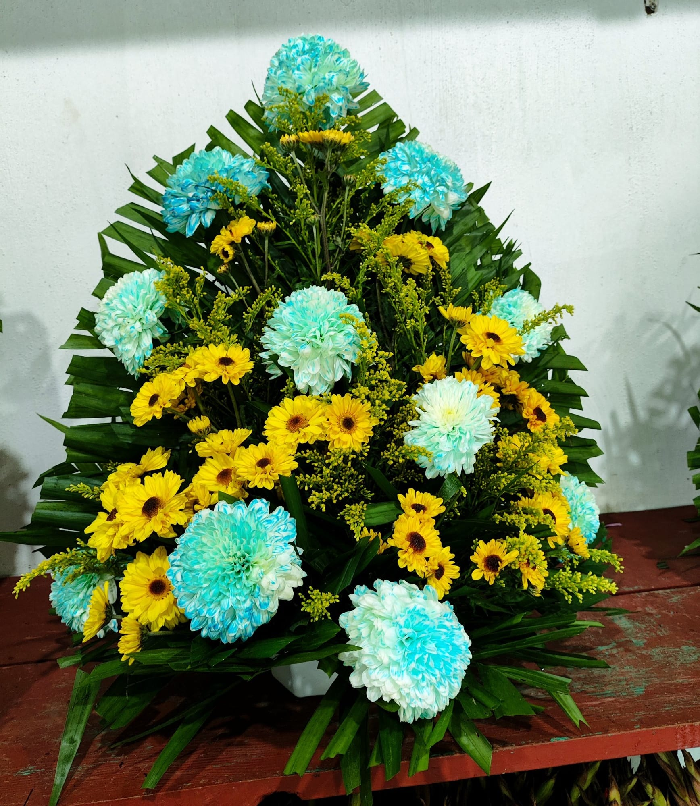
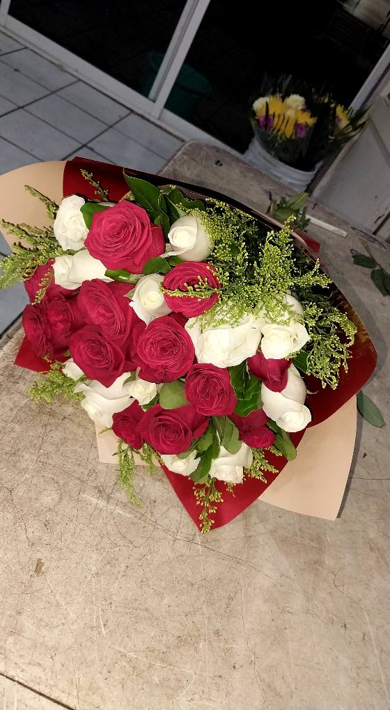
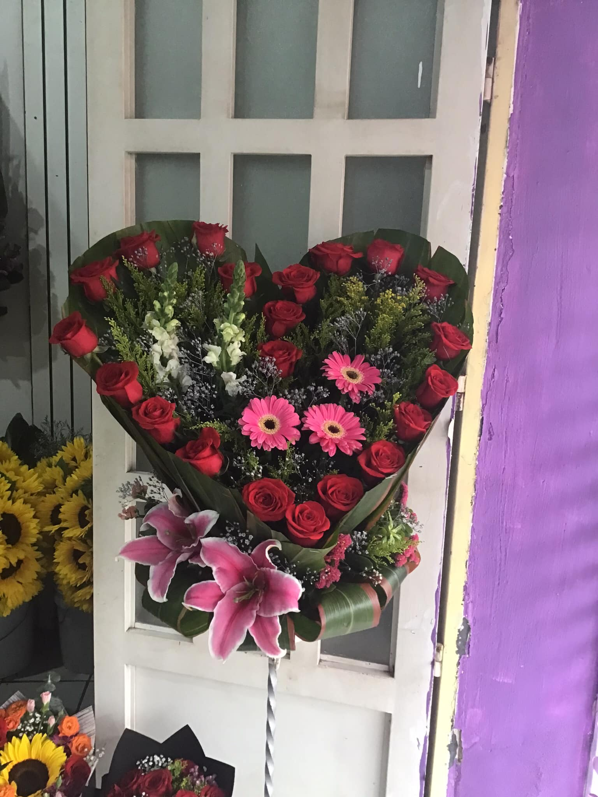
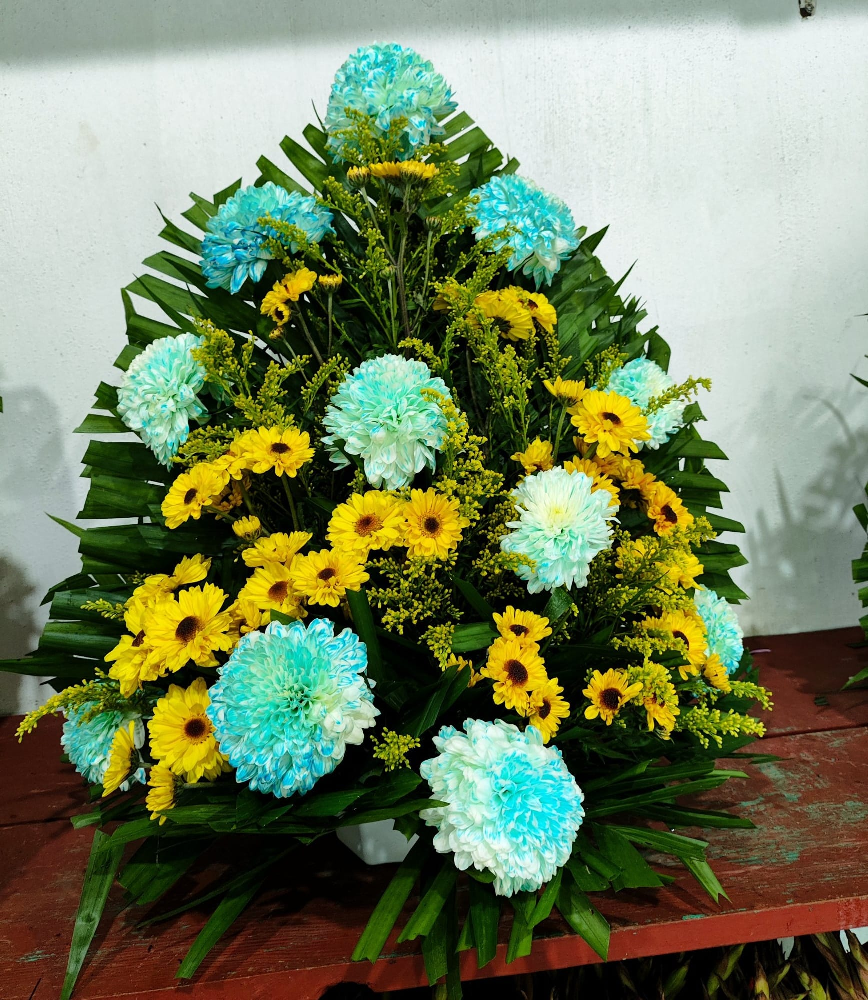
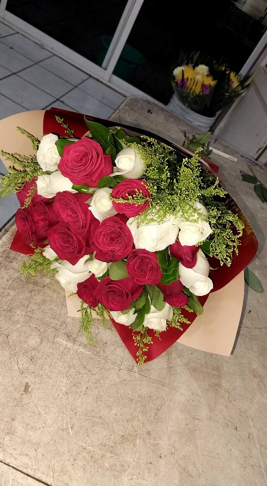
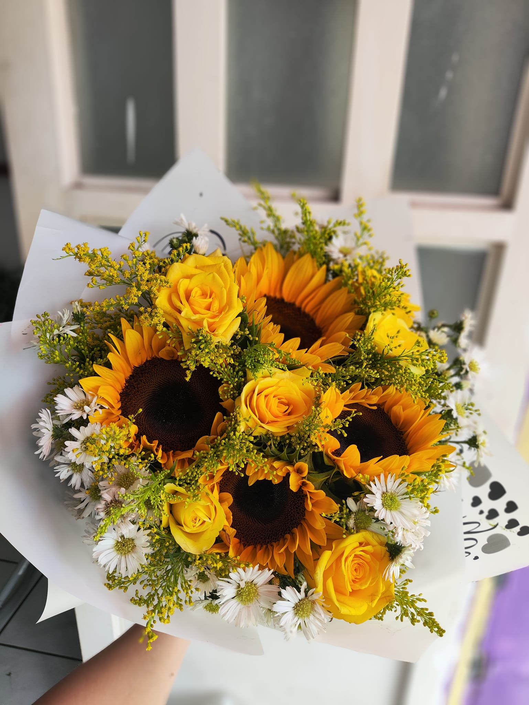

¿Cómo elegir las flores perfectas?
Descubre que arreglos florales combinan mejor para tu casa, oficina o evento programado.
 

El color de rosas, un sueño de pasión.
En Florería Margarita Casa Floral, creamos diferente variedad de arreglos florales para cualquier tipo de evento que necesite el cliente. Nuestro compromiso es transmitir tus sentimientos con la belleza, los colores y el aroma de las flores.
Nuestra misión es ofrecer una gama amplia de productos de arreglos florales para todo tipo de eventos bien elaborados y presentados con los precios adecuados para que la mayor cantidad posible de personas pueda adquirirlos. La visión consiste en ofrecer al mundo nuestros productos nuevos de arreglos florales por medio de distintas plataformas digitales.
Los valores que se demuestran dentro de nuestra floreria para dar un mejor ambiente ha nuestros empleados y clientes son:
En el catalogo de productos se muestra los diferentes arreglos florales para cualquier evento que se vaya a realizar como puede ser un funeral, cumpleaños o regalo especial para tu pareja con un precio adecuado.


 





Descubre que arreglos florales combinan mejor para tu casa, oficina o evento programado.

La combinación de los diferentes colores en las flores hace llamar la atención a muchas personas e inspirándolas en expresar sus sentimientos y emociones a través de ellas.

Estamos ubicados por la calle Ignacio Zaragoza #252 Ote. Entre calles Querétaro y Puebla, Colonia las Brisas, Tecuala; Nayarit. Enseguida de la Funeraria Juan Pablo.
Solo llámenos a los números que aparecen para atenderlo como ha usted se lo merece:
O envíenos un mensaje a través de este espacio para responder sus preguntas y dudas que tenga acerca de nuestros arreglos florales que tenemos disponibles.